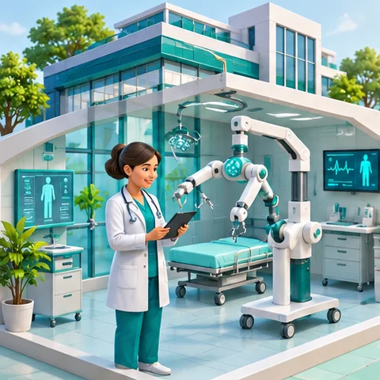

الصحة والرعاية

تصوّر HGW لمنظومة رعاية صحية شاملة تربط الوقاية والفحوصات والتقييم والعلاج والمتابعة. تستخدم المنظومة المقترحة الروبوتات والذكاء الاصطناعي والأتمتة لدعم فرق الرعاية تحت إشراف بشري مباشر.
وحدات الرعاية المقترحة
- وحدات الفحوصات الذكية. تُنظّم حجز الفحوصات وتسجيل النتائج وتجهيزها للمراجعة. يراجع الفريق الصحي النتائج ويحدد الحاجة إلى متابعة أو إحالة.
- وحدات العمليات بمساعدة الروبوتات. تدعم الروبوتات فريق الجراحة أثناء الإجراءات التي يحددها الفريق. يتولى المختصون التخطيط والإشراف أثناء العملية والتحكم في الأجهزة.
- وحدات الرعاية والمتابعة الذكية. تساعد الأتمتة في تنظيم المواعيد ومتابعة خطة الرعاية وإيصال التنبيهات إلى الفريق الصحي ليقرر الإجراء المناسب.
الإشراف البشري وخصوصية المريض
يتحمل الفريق الصحي مسؤولية القرارات السريرية ومراجعة مخرجات الأنظمة. ويتضمن التصوّر إمكان التدخل اليدوي وإيقاف الإجراء المؤتمت، وتحديد صلاحيات الاطلاع على البيانات الصحية، وتوثيق الوصول إليها.
حالة المشروع. الصفحة تعرض تصوّر المنظومة. خدمات الفحص والعمليات والرعاية غير متاحة للحجز عبرها حاليًا.